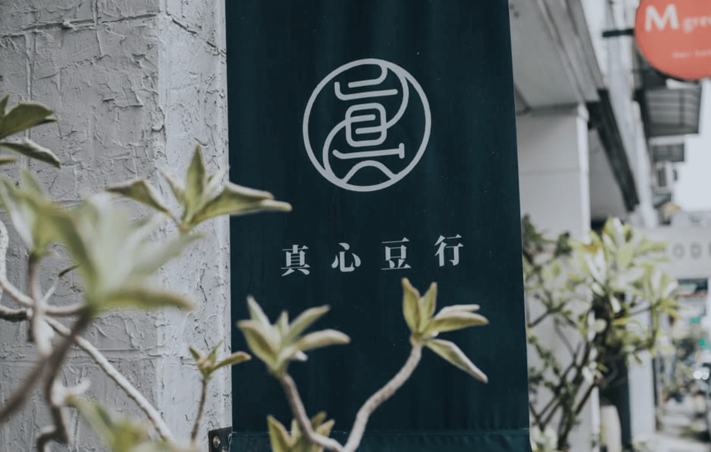
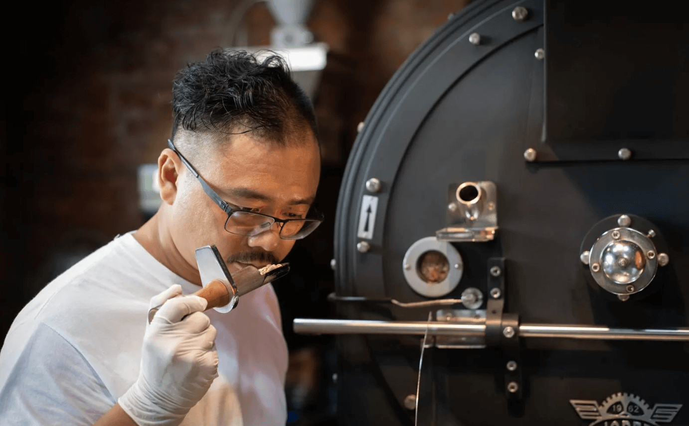
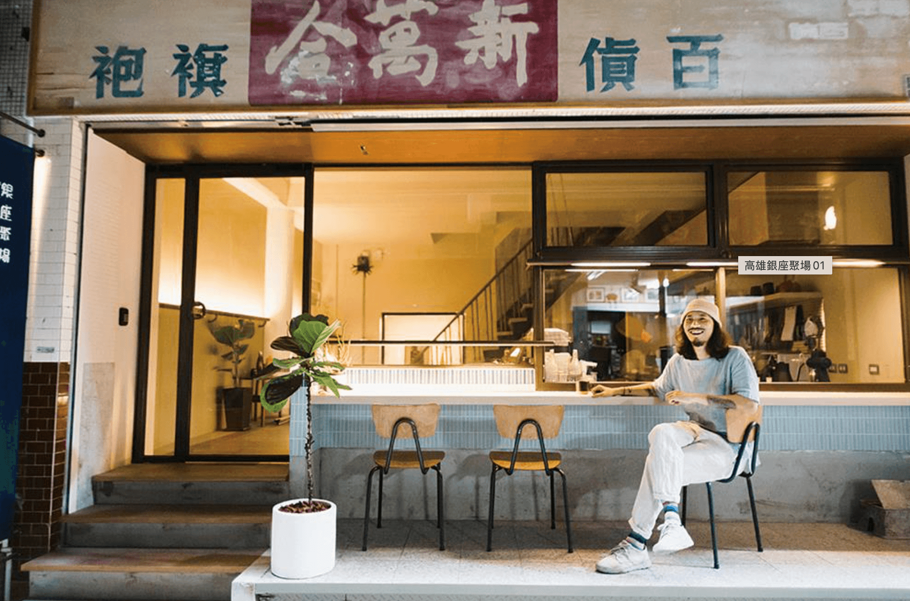
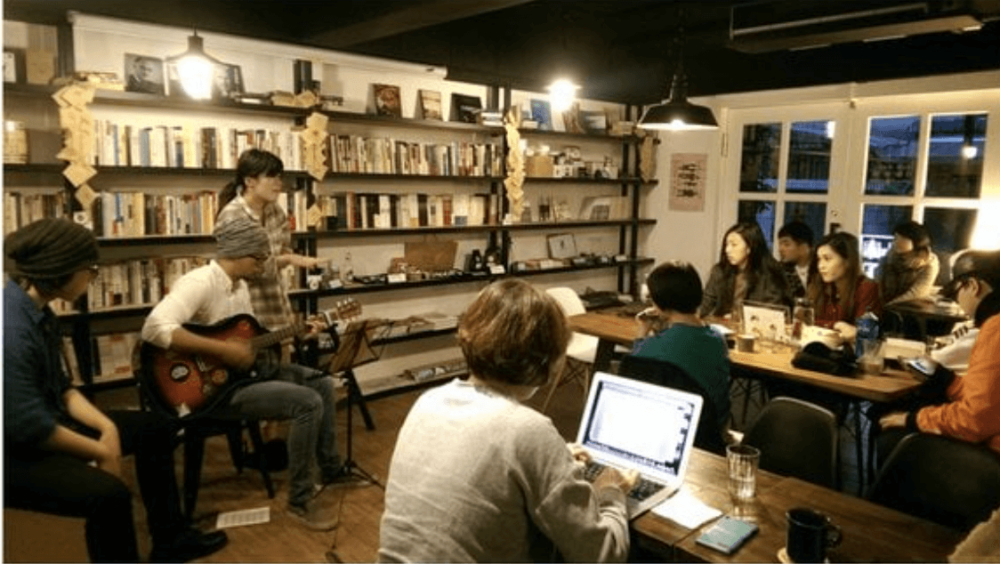

從自家烘豆開始：真心豆行的謙卑苦行
高雄的精品咖啡浪潮，多半從自家烘豆師的堅持開始。「真心豆行」（Jenshin Coffee）便是這股精神的代表。創辦人小吳哥在業界有深厚基礎，最終選擇專注於烘焙技術的鑽研。真心豆行秉持著嚴選精品生豆的原則，致力於提供最健康、最原始的咖啡風味。
在真心的品項中，常見到如「衣索比亞橘光舞妓蜜處理」這樣的淺焙精品豆。其風味細膩，猶如古典樂般晶瑩剔透，帶有優雅的熟果與花香，甜感圓潤且不酸澀，這也是其廣受在地咖啡愛好者喜愛的原因。他們在高雄的多個據點，將清新的白色歐風設計吹入街角，價格親民，成為實踐日常咖啡美學的理想選擇。
冠軍的溫度：賴昱權與喔咖啡的共感信念
談及高雄咖啡，不能不提世界咖啡烘焙大賽冠軍賴昱權（Jacky Lai）創立的「喔咖啡」（OH! Café）。Jacky 不僅是技術上的頂尖職人，更透過咖啡傳遞一種「與人共感」的溫柔信念。他認為，一杯咖啡的精粹，在於它帶給人的情感和溫情。
喔咖啡的空間設計常揉合日式懷舊風格與人文溫度。Jacky 曾研發一款名為「Dear J.」的咖啡，以核果甜度為主，後段帶出熟梅果味，微酸卻糅和著甜味。這款咖啡背後的故事，體現了咖啡師如何將風味設計與生活中的情感故事相結合，讓技術與溫度並存，將咖啡提升到藝術的層次。喔咖啡以精緻的手沖和穩定的烘焙品質，滿足了對風味有極致追求的咖啡客。
深夜的昭和浪漫：夜間部咖啡與銀座聚場
高雄的咖啡文化不僅限於白天，其深夜咖啡館同樣充滿了獨特魅力。例如「二木咖啡夜間部」（Futagi Coffee Roaster Night），它將老宅改裝成充滿日式昭和懷舊風格的空間，以木質裝潢、老物件、和昏黃的燈光，為夜貓子提供了一個安靜、放鬆、且充滿復古情懷的「深夜食堂」。他們的咖啡豆雖然不採深烘焙，但風味均衡，尤其搭配他們招牌的焦糖布丁或奶酥厚片，是夜晚裡簡單又滿足的享受。
另一間在鹽埕區的「銀座聚場」（House of Takao Ginza），更是將老鹽埕的歷史特色應用到一棟 70 年老屋內。它藏身於高雄第一條百貨街——日治時期的「高雄銀座」商場巷弄中，空間中保留了磨石子地板、澡堂意象的凹陷吧檯。其飲品如「銀座特調」（加入鹽埕在地冬瓜糖的特調咖啡），讓咖啡不只是飲品，更是承載時光記憶的載體，帶領顧客進行一場跨越時空的懷舊之旅。
從一杯咖啡，讀懂高雄的城市溫度
這些獨立咖啡館，共同構成了高雄咖啡文化多元的樣貌。它們不追求大規模連鎖複製，而是堅持在自家烘焙、手工沖煮、以及獨特的空間氛圍上深耕細作。這正是高雄「職人精神」的體現：不急不躁，實在且有溫度。無論是精品咖啡的純粹，還是老屋特調的懷舊，高雄的咖啡師們正用一杯杯「入魂」的飲品，點亮港都的巷弄與夜晚。
